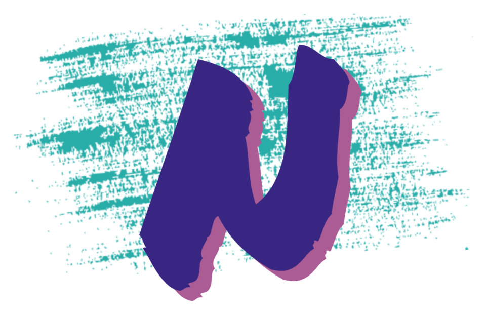

Neptune turns the movies and shows you own into live TV channels with a real guide, on your own computer. Free, no account, no subscription.
Get NeptunePick your platform belowOne program on one computer in the house. It reads your media, runs the channels, and serves every screen. Everything it needs is in the box.
Point Neptune at the movies and shows you already own. It builds channels that are always on, and everything else a real lineup needs.